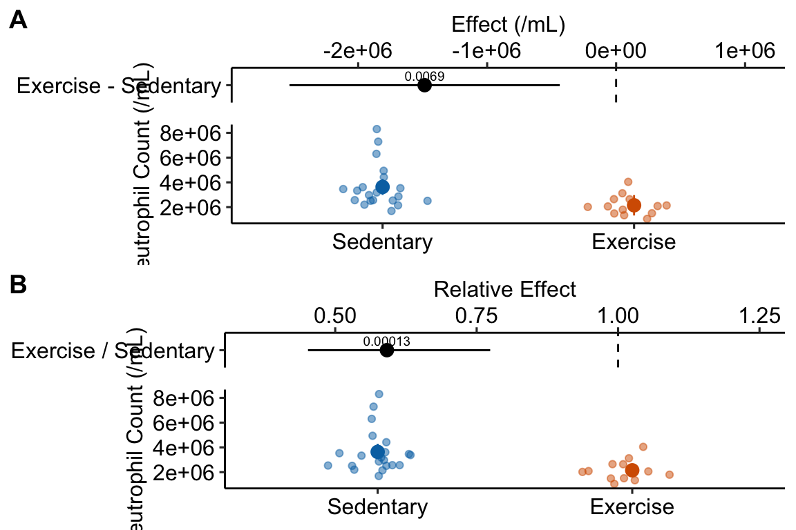

Chapter 12 Violations of independence, homogeneity, or Normality
12.1 Lack of independence
12.1.1 Example 1 (exp1b) – a paired t-test is a special case of a linear mixed model
The data are from the experiment for Figure 1b of the 12,13-diHOME article from the previous chapter.
Response variable – \(\texttt{diHOME}\): concentration (pmol per ml) of the putative lipokine 12,13 di-HOME. This is a continuous variable.
Factor variable – \(\texttt{treatment}\), with levels: “saline” and “cold”. Coded as a factor.
Blocking variable – id: identification code of the individual human.
Design – Blocked. Plasma concentrations of 12,13-diHOME were measured two times in each individual, after injection with saline and after a 1 hour cold exposure.
The consequence of the two measures in each human is correlated error. In blocked designs like this, the correlated error arises because we expect measures within a block (the individual for the exp1b experiment) to be more similar to each other than to measures among blocks. A blocked design is a powerful experimental method to reduce uncertainty in estimates of differences among means – and, consequently, the power of a statistical test. The paired t-test exploits this design while the classic Student’s t-test ignores it.
Multiple response measures per individual violate the independent sampling assumption for inference. If there is a lack of independence between the two groups, a “which test?” strategy points to a paired t-test in place of Student’s t-test.
A paired t-test is a special case of a linear mixed model. Linear mixed models are discussed more in the chapter Models with random factors – Blocking and pseudoreplication.
A good way to think about the model generating the data is
\[ \begin{equation} \texttt{diHome} = (\beta_0 + \gamma_{0_j}) + \beta_1 (\texttt{treatment_cold}) + \varepsilon \end{equation} \]
- \(\beta_0\) is the expected value of \(\texttt{diHome}\) in humans given a saline treatment.
- \(gamma_{0_j}\) is the effect of being human j on the expected value of \(\texttt{diHome}\). \(\gamma_{0_j}\) is a kind of random effect.
- \(\beta_0 + \gamma_{0_j}\) is the expected value of \(\texttt{diHome}\) in human j given a saline treatment. It is the random intercept for human \(j\).
- \(\beta_0 + \gamma_{0_j} + \beta_1\) is the expected value of \(\texttt{diHome}\) in human j given a cold treatment.
Importantly, if the random effect (\(\gamma_{0_j}\)) isn’t modeled, then variation in this component is picked up by the model error \(e\). Consequently, the error component is correlated because the subsets of \(e\) from the same individual are expected to have more similar values to each other than to that from other individuals. Correlated error is discussed more in the chapter Models with random factors – Blocking and pseudoreplication. Importantly, if the random effect isn’t modeled, the increased variance of \(e\) decreases precision of the estimate. Consequently, CIs are wider and significance tests have less power.
12.1.1.1 Fit the model
- The function
lmer()from the lme4 package allows the addition of random factors to the model formula. Otherwise, the function works like thelmfunction. - The added random factor is \(\texttt{id}\), which contains the id of the human. \(\texttt{id}\) didn’t appear from nowhere, it is a column in the data.table exp1b.
- Random factors are added embedded within parentheses. A random intercept is added using the formula
(1|factor)where \(\texttt{factor}\) is the names of the column of the data containing the random factor. - \(\texttt{id}\) is a random factor. \(\texttt{treatment}\) is a fixed factor. Models with both fixed and random factors go by many names. In this text, I use “linear mixed model”.
12.1.1.2 Inference
Inference using the linear model with added random factor:
# estimated marginal means table
exp1b_m1_emm <- emmeans(exp1b_m1, specs = "treatment")
# contrasts table
exp1b_m1_pairs <- contrast(exp1b_m1_emm,
method = "revpairwise") %>%
summary(infer = TRUE)
exp1b_m1_pairs %>%
kable(digits = c(1,1,2,1,1,1,5,5)) %>%
kable_styling()| contrast | estimate | SE | df | lower.CL | upper.CL | t.ratio | p.value |
|---|---|---|---|---|---|---|---|
| cold - saline | 0.2 | 0.05 | 8 | 0.1 | 0.4 | 4.27223 | 0.00272 |
Inference using paired t-test:
exp1b_ttest <- t.test(
x = exp1b[treatment == "cold", diHOME],
y = exp1b[treatment == "saline", diHOME],
paired = TRUE
)
exp1b_ttest##
## Paired t-test
##
## data: exp1b[treatment == "cold", diHOME] and exp1b[treatment == "saline", diHOME]
## t = 4.2722, df = 8, p-value = 0.002716
## alternative hypothesis: true mean difference is not equal to 0
## 95 percent confidence interval:
## 0.1078778 0.3609173
## sample estimates:
## mean difference
## 0.2343975Notes
- The t and p values from the linear model and from the t-tests are the same because the paired t-test is a special case of the linear model.
12.1.2 Example 2 (diHOME exp2a) – A repeated measures ANOVA is a special case of a linear mixed model
The structure of the Figure 2A experiment from the chapter Linear models with a single, categorical X is ambiguous. It is not clear from the archived data if the measures of 12,13 diHome were on separate mice within each of the three treatments (“Control”, “1 hour cold”, “30 min NE”) or if the same mice were used in each set. If each mouse was measured three times, I assume the researchers would have stated this, which they didn’t. But, to outline modeling correlated data when we have more than two groups, let’s say each mouse in the Figure 2A experiment was subjected to all three treatments. We have three measures per mouse and the response measure violates the independence assumption.
The linear model (in regression notation) is
\[ \begin{equation} \texttt{diHome} = (\beta_0 + \gamma_{0_j}) + \beta_1 \texttt{treatment}_\texttt{cold} + \beta_2 \texttt{treatment}_\texttt{NE} + \varepsilon \end{equation} \]
12.1.2.1 Fit the model
Notes
- If a treatment factor has more than two groups, nothing special has to be done relative to a model with a treatment factor with only two groups.
12.1.2.2 Inference
Inference using the linear model with added random factor:
# estimated marginal means table
exp2a_m1_emm <- emmeans(exp2a_m1, specs = "treatment")
# contrasts table
exp2a_m1_planned <- contrast(exp2a_m1_emm,
method = "trt.vs.ctrl",
adjust = "none") %>%
summary(infer = TRUE)
exp2a_m1_planned %>%
kable(digits = c(1,1,2,1,1,1,5,5)) %>%
kable_styling()| contrast | estimate | SE | df | lower.CL | upper.CL | t.ratio | p.value |
|---|---|---|---|---|---|---|---|
| 1 hour cold - Control | 8.1 | 3.88 | 9.4 | -0.6 | 16.8 | 2.08124 | 0.06589 |
| 30 min NE - Control | 14.8 | 3.62 | 9.0 | 6.6 | 23.0 | 4.08718 | 0.00271 |
12.1.2.3 repeated measures ANOVA
In some fields, this analysis would be called repeated measures ANOVA and in others it might be called a two-way Model II (mixed effect) ANOVA with one fixed and one random factor.
## Warning: Missing values for 1 ID(s), which were removed before analysis:
## Animal 6
## Below the first few rows (in wide format) of the removed cases with missing data.
## id Control X1.hour.cold X30.min.NE
## # 6 Animal 6 12.84069 NA 45.00093Notes
- The measure of \(\texttt{diHOME}\) for animal_6 for the 1 hour cold treatment is missing. To use the
exp2adata in repeated measures ANOVA, the “Control” and “30 min NE” values for animal_6 have to be excluded. This exclusion isn’t necessary for the linear mixed model, which is one of the advantages of a linear mixed model over repeated measures ANOVA.
The contrasts from the model are
exp2a_m1_planned <- emmeans(exp2a_m2, specs = "treatment") %>%
contrast(method = "trt.vs.ctrl",
adjust = "none") %>%
summary(infer = TRUE)
exp2a_m1_planned %>%
kable(digits = c(1,1,2,1,1,1,5,5)) %>%
kable_styling()| contrast | estimate | SE | df | lower.CL | upper.CL | t.ratio | p.value |
|---|---|---|---|---|---|---|---|
| X1.hour.cold - Control | 7.3 | 3.32 | 4 | -1.9 | 16.5 | 2.19728 | 0.09293 |
| X30.min.NE - Control | 11.3 | 2.27 | 4 | 5.0 | 17.6 | 4.97783 | 0.00761 |
- Lets remove animal 6 and rerun the linear mixed model
exp2a_m1
exp2a_complete <- exp2a[id != "Animal 6"]
exp2a_complete_m1 <- lmer(diHOME ~ treatment + (1|id), data = exp2a_complete)
exp2a_m1_complete_planned <- emmeans(exp2a_complete_m1, specs = "treatment") %>%
contrast(method = "trt.vs.ctrl",
adjust = "none") %>%
summary(infer = TRUE)
exp2a_m1_complete_planned %>%
kable(digits = c(1,1,2,1,1,1,5,5)) %>%
kable_styling()| contrast | estimate | SE | df | lower.CL | upper.CL | t.ratio | p.value |
|---|---|---|---|---|---|---|---|
| 1 hour cold - Control | 7.3 | 2.83 | 8 | 0.8 | 13.8 | 2.57671 | 0.03278 |
| 30 min NE - Control | 11.3 | 2.83 | 8 | 4.8 | 17.9 | 3.99395 | 0.00398 |
Notes -
- Inference is the same.
12.1.2.4 Inferences from the linear mixed model and paired t-tests are not the same when there are more than two groups
Inference using two paired t-tests:
exp2a_ttest_cold <- t.test(
x = exp2a[treatment == "1 hour cold", diHOME],
y = exp2a[treatment == "Control", diHOME],
paired = TRUE
)
exp2a_ttest_cold##
## Paired t-test
##
## data: exp2a[treatment == "1 hour cold", diHOME] and exp2a[treatment == "Control", diHOME]
## t = 2.1973, df = 4, p-value = 0.09293
## alternative hypothesis: true mean difference is not equal to 0
## 95 percent confidence interval:
## -1.925189 16.533005
## sample estimates:
## mean difference
## 7.303908exp2a_ttest_ne <- t.test(
x = exp2a[treatment == "30 min NE", diHOME],
y = exp2a[treatment == "Control", diHOME],
paired = TRUE
)
exp2a_ttest_ne##
## Paired t-test
##
## data: exp2a[treatment == "30 min NE", diHOME] and exp2a[treatment == "Control", diHOME]
## t = 3.7564, df = 5, p-value = 0.01321
## alternative hypothesis: true mean difference is not equal to 0
## 95 percent confidence interval:
## 4.670273 24.918436
## sample estimates:
## mean difference
## 14.79435Notes
- important – the t-test for the comparison of “1 hour cold” and “Control” excluded mouse 6 because of a missing “1 hour cold” measure. The linear mixed model was fit to all data, including the “Control” and “30 min NE” measures. The consequence is more precision in the linear mixed model.
- The paired t-test t and p values are not equal to those from the linear mixed model. This is partly because of the missing data (note 1). Even if there were no missing data, these wouldn’t be equal because the linear mixed model uses an estimate of \(\sigma\) computed from the single model with all three groups to compute the standard errors. See the comparison of t-tests and the contrast table from a linear model in Section ??.
- The results of the separate, paired t-tests and the linear mixed model differ in a way that might affect our inference about the system. Which is correct? Neither – they simply make different assumptions about the data generating model.
- The linear model strategy has more power and precision but this advantage is small. The best reason to use linear models instead of separate t-tests is learning how to use linear models, and their extensions, gives you phenomenal cosmic power.
- Do not compute both separate paired t-tests and the linear models and then convince yourself that that the assumption of the method with the p-value that matches your hypothesis is correct. See the p-hacking discussion above.
12.2 Heterogeneity of variances
Heterogeneity of variance among treatment groups is a problem for inference, especially if the sample size is unequal among groups (statisticians tend to agree that heterogeneity is much more problematic than a non-normal response).
12.2.0.1 A Welch t-test is a special case of a linear model for heterogeneity
A “which test?” strategy points to a Welch’s t-test in place of Student’s t-test if there is heterogeneity of variances between treatment groups. A Welch t-test is infrequent in the experimental biology literature, perhaps because
- it is poorly known and it doesn’t occur to researchers to use a test that models heterogeneity of variances.
- heterogeneity often arises in right-skewed data, which is often analyzed with a non-parametric test like the Mann-Whitney U test.
The Welch t-test is a special case of a linear model that explicitly models the within-group variance using generalized least squares (GLS). The 95% CI of a mean differences and p-values from the fit gls linear model and from Welch’s t-test are the same. Advantages of using a linear modeling strategy is that a researcher uses the model to estimate effects (difference in means) and measures of uncertainty in the effects (standard errors or confidence intervals of the difference). Advantages of specifically using a GLS linear model is that it is easily expanded to analyze more complex designs including 1) more than one factor, 2) added covariates, 3) correlated residuals due to non-independence.
Some statisticians argue that researchers should always use a Welch t-test instead of Student’s t-test. Given this logic, researchers should consider using GLS linear models for more complex experimental designs (added covariates, factorial) in place of classical ANCOVA and two-way ANOVA.
Modeling variance heterogeneity is the focus of Chapter 19 so the account here is brief. Heterogeneity can be modeled using a generalized least squares linear model with the gls function. The weights argument is used to model the variances using each group’s sample variance. In this example, I use the data from the Figure 1b experiment, which can be compared to the analysis of the same data in Example 2 above.
12.2.0.2 Fit the model
# gls fails with missing data
subdata <- exp2a[is.na(diHOME) == FALSE,] # omit rows with missing data
exp2a_m3 <- gls(diHOME ~ treatment,
data = subdata,
weights = varIdent(form = ~ 1 | treatment))The model exp2a_m3 uses variance computed in each group separately as the estimate of \(\sigma\) for that group. The coefficient table of the GLS model is
12.2.0.3 Inference from the linear model
exp2a_m3_coef <- cbind(coef(summary(exp2a_m3)),
confint(exp2a_m3))
exp2a_m3_coef %>%
kable(digits = c(4,4,4,6,4,4)) %>%
kable_styling()| Value | Std.Error | t-value | p-value | 2.5 % | 97.5 % | |
|---|---|---|---|---|---|---|
| (Intercept) | 12.0231 | 1.2001 | 10.0181 | 0.000000 | 9.6708 | 14.3753 |
| treatment1 hour cold | 7.1404 | 3.1635 | 2.2571 | 0.040505 | 0.9401 | 13.3407 |
| treatment30 min NE | 14.7944 | 4.5688 | 3.2382 | 0.005951 | 5.8398 | 23.7490 |
Notes
- Important for reporting CIs and p-values. Unlike the linear model modeling homogenous variance, the CIs and p-values for the coefficients of \(\texttt{treatment1 hour cold}\) and \(\texttt{treatment30 min NE}\) are not the same as the p-values of these equivalent contrasts in the contrasts table (see below). The reason is, the computation of the CI and p-values in the two tables use two different degrees of freedom. Report the CI and p-values from the contrast table using the Satterthwaite df.
The modeled means and contrasts are computed as above for the lm object
## treatment emmean SE df lower.CL upper.CL
## Control 12.0 1.20 5 8.94 15.1
## 1 hour cold 19.2 2.93 4 11.04 27.3
## 30 min NE 26.8 4.41 5 15.49 38.1
##
## Degrees-of-freedom method: satterthwaite
## Confidence level used: 0.95Notes
- The SE of the means in this table are modeled SEs but are equal to the sample SE of the means, because this was specified in the GLS model.
exp2a_m3_pairs <- contrast(exp2a_m3_emm,
method = "revpairwise",
adjust = "none") %>%
summary(infer = TRUE)
exp2a_m3_pairs %>%
kable(digits = c(1,4,4,1,4,4,4,5)) %>%
kable_styling()| contrast | estimate | SE | df | lower.CL | upper.CL | t.ratio | p.value |
|---|---|---|---|---|---|---|---|
| 1 hour cold - Control | 7.1404 | 3.1635 | 5.3 | -0.8394 | 15.1201 | 2.2571 | 0.07026 |
| 30 min NE - Control | 14.7944 | 4.5688 | 5.7 | 3.4896 | 26.0991 | 3.2382 | 0.01889 |
| 30 min NE - 1 hour cold | 7.6540 | 5.2915 | 8.4 | -4.4596 | 19.7675 | 1.4465 | 0.18452 |
Notes
- Compare the statistics for “1 hour cold - Control” and “30 min NE - Control” to the coefficients for \(\texttt{treatment1 hour cold}\) and \(\texttt{treatment30 min NE}\) in the coefficient table. The estimates, SE, and t are the same but the CIs and p values differ. The contrast function is using a different method (“satterthwaite”) for computing the degrees of freedom and this results in a different value of the t-distribution tail area used to compute the CI and p value.
12.2.0.4 Inference using Welch t-test
test1 <- t.test(exp2a[treatment == "1 hour cold", diHOME],
exp2a[treatment == "Control", diHOME],
var.equal = FALSE)
test2 <- t.test(exp2a[treatment == "30 min NE", diHOME],
exp2a[treatment == "Control", diHOME],
var.equal = FALSE)
test3 <- t.test(exp2a[treatment == "30 min NE", diHOME],
exp2a[treatment == "1 hour cold", diHOME],
var.equal = FALSE)Notes
- the default
t.testis the Welch t-test. However, I’ve includedvar.equal = FALSEso the method is transparent.
12.2.0.5 Compare inference from the linear model and Welch t-tests
Compare the contrast p values to the three Welch t-tests of all pairs of treatment levels in the exp2a experiment.
| contrast | t (gls lm) | p (gls lm) | t (welch t) | p (welch t) |
|---|---|---|---|---|
| 1 hour cold - Control | 2.257139 | 0.0702620 | 2.257139 | 0.0702622 |
| 30 min NE - 1 hour cold | 1.446454 | 0.1845157 | 1.446454 | 0.1845155 |
| 30 min NE - Control | 3.238157 | 0.0188906 | 3.238158 | 0.0188904 |
The t and p-values computed from the GLS linear model and from the three, pairwise Welch t-tests are the same (to about the 6th decimal place). They are the same because each is estimating \(\sigma^2\) separately for each group and not as the pooled (among two groups for t-test or three groups for the linear model) estimate and because they use the same degrees of freedom to compute the p-value.
Let’s summarize these comparisons
- Inference from a linear model using homogenous variance (the
lmfunction) and from a Student’s t-test are the same if there are only two levels in the treatment variable. - Inference from a linear model using homogenous variance (the
lmfunction) and from the series of pairwise, Student’s t-tests differ when there are more than two levels in the treatment variable. - Inference from a GLS linear model using heterogenous variance (the
glsfunction) and from a Welch t-test are the same regardless of the number of levels in the treatment variable.
Even though the linear model that models heterogeneity and the Welch t-test produce the same results, researchers should use the linear model because
- A linear modeling strategy encourages researchers to think about the effect and uncertainty in the effect and not just a p-value.
- The linear model is nearly infinitely flexible and expandible while the t-test has extremely limited flexibility (The Welch t-test is one way to expand the classical, Student’s t-test).
12.3 The conditional response isn’t Normal
It is common to hear or read from a statistitican that of all the issues with inference from a classical linear model (including t-tests and ANOVA), non-normal “data” is the least worrisome – we should be much more concerned about lack of independence and heterogeneity.
- The theoretical basis for this sentiment is the central limit theorem. In short, if we repeatedly 1) sample a non-normal distribution and 2) compute the sample mean, the distribution of these resampled means is approximately normal (the distribution converges to normal as the sample size increases). Because inferential statistics using a classical linear model assume a normal distribution of the means, inference from classical linear models are increasingly robust to non-normal distributions as the sample size increases. The main issue for applied statistics in experimental biology is the small sample sizes.
- Empirical results from simulations support the theory. Actual type I error using classical linear models with non-normal data tends to be close to the nominal (say, 0.05) level.
- That said, generalized linear models that explicitly model the distribution have more power than classical linear models and this is a pretty good reason to use GLMs.
- Confidence intervals computed using the normal distribution on non-normal data can be awkward, for example, the CIs might include impossible values such as negative counts or percent of cells expressing a certain marker above 100 %.
The normality assumption of the classical linear model does not apply to the distribution of the response (Y) variable and certainly not to the distribution of the treatment (X) variable but to the residuals of the fit model (actually, it applies to the distribution of the means, but if the sampling distribution is normal then the means are normal). An equivalent way to think about this is that the normality assumption applies to the distribution of the response if all values of \(X\) in the sample are the same – this is known as the conditional response. Contrary to common practice by experimental biologists, and the advice of some textbooks, there is no good reason to use the p-value from a test of normality as a decision tool to use either a t-test or a non-parametric test like the Mann-Whitney-Wilcoxon. A test of normality for small samples will frequently result in \(p > 0.05\) (“normal”), even for fake data sampled from a nonnormal distribution, while a test with a large sample size will frequently result in \(p < 0.05\) (“not-normal”) even if a histogram of the residuals appears normal.
A Normal Q-Q plot (Section 11.3.2) is a useful tool for the decision to use some alternative to inference using a Normal assumption. If a Q-Q plot indicates that the residuals are far from expected for a normal distribution, then the researcher has several alternatives, the best choice of which partially depends on the goals of the analysis. Some alternative to a linear model assuming normal distribution include:
- Count data – count data tend to be right skewed and groups with higher mean counts tend to have larger variance.
- Generalized linear models using either a negative binomial or quasi-poisson distribution family are a good alternative to consider.
- Bootstrap confidence intervals and permutation p-values are resampling techniques. Bootstrap confidence intervals are a good alternative if the sample size is much larger (say, > 40) than typical in experimental biology. Permutation p-values are a good alternative regardless of sample size.
- A GLS linear model to account for any heterogeneity in variance that typically accompanies non-normal data. This doesn’t address the non-normal distribution but, again, heterogeneity is typically a much larger problem than non-normality.
- Log transformation of a count response is controversial at best. log transformations can be pretty good at making the response look more like it was sampled from a normal distribution (and can make variances more similar). But…If the counts include zero, researchers have to add a kludge factor (typically equal to 1) to all counts prior to transformation. The value of the kludge factor is arbitrary and matters (adding .1 gives different results than adding 1). A log transformation (or any transformation) raises interpretation problems. For the log transformation, the effect is the difference between the means of the log-transformed counts. I don’t know what the magnitude of an effect on a log scale means biologically. If we backtransform this, the effect is the ratio of the geometric means of the two groups. A ratio effect is easy enough to interpret but do we really want to model the geometric and not the arithmetic means? Finally, log transformation does not specifically address either the shape of the distribution or the heterogeneity that often comes with the non-normal shape. A generalized linear model can specifically model both the shape and the variance.
- Classic non-parametric tests such as Mann-Whitney-Wilcoxon were invented when computers were not fast enough to perform permutation tests and before the development of Generalized Linear Models (and other modern methods). Since at least 1990, there are better alternatives to non-parametric tests.
- Fraction (proportion) data – For example, the number of cells expressing a certain marker relative to all counted cells in the sample. Fraction data have hard bounds at 0 and 1, or at 0 and 100 if converted to a percent. Fraction data tend to be right skewed if the mean is closer to zero and left skewed if the mean is closer to the upper bound.
- Generalized linear model using a binomial distribution family with a logit link (“logistic regression”) is a good alternative to consider. This model is used for Bernouili (success/fail) responses (for example the subject “lived” or “died”), where success is assigned the value 1 and fail is assigned the value 0. Using this model with proportion data is equivalent to assigning a 0 (“does not express marker”) or 1 (“expresses marker”) to all cells in the count.
- Bootstrap confidence intervals and permutation p-values are resampling techniques. Bootstrap confidence intervals are a good alternative if the sample size is much larger (say, > 40) than typical in experimental biology. Permutation p-values are a good alternative regardless of sample size.
- A GLS linear model to account for any heterogeneity in variance that typically accompanies non-normal data. This doesn’t address the non-normal distribution but, again, heterogeneity is typically a much larger problem than non-normality.
- arcsin transformation. See [The arcsine is asinine: the analysis of proportions in ecology] (https://esajournals.onlinelibrary.wiley.com/doi/full/10.1890/10-0340.1)
- Classic non-parametric tests such as Mann-Whitney-Wilcoxon were invented when computers were not fast enough to perform permutation tests and before the development of Generalized Linear Models (and other modern methods). Since at least 1990, there are better alternatives to non-parametric tests.
Generalized linear models that explicitly model the distribution of the response is covered in more detail in the chapter Linear models for count data – Generalized Linear Models I.
12.3.1 Example 1 (fig6f) – Linear models for non-normal count data
Source article: Exercise reduces inflammatory cell production and cardiovascular inflammation via instruction of hematopoietic progenitor cells
12.3.1.1 Fit a Linear Model – Inference assuming Normal conditional response
fit the model
check the model

The left plot shows classic right skew. The right plot shows evidence for positive relationship between mean and variance. This suggest we fit a negative binomial or quasi-poisson model.
inference
12.3.1.2 Fit a Generalized Linear Model – inference assuming negative binomial conditional response
Generalized linear models for count data are covered more thoroughly in the chapter Linear models for count data – Generalized Linear Models I.
fit the model
Notes
- The function
glmmTMBallows fitting from multiple distribution families and works like thelmfunction with a few tweaks, including an argument for the distribution family.
inference
| Estimate | Std. Error | z value | Pr(>|z|) | |
|---|---|---|---|---|
| (Intercept) | 15.11 | 0.085 | 177.9 | 0.00000 |
| treatmentExercise | -0.53 | 0.137 | -3.8 | 0.00013 |
Notes
- The
coeffunction for a glmmTMB object is a list with several elements. the element \(\texttt{\$cond}\)” returns the coefficient table. - \(b_0\) (\(\texttt{(intercept)}\)) is the natural log of the mean of the reference (“sedentary”) group.
- \(b_1\) (\(\texttt{(intercept)}\)) is the difference of the natural log of the mean of exercise group mean and the natural log of the mean of the sedentary group mean.
- The coefficient values are on a link scale, which is the scale of the transformation of the group means in the GLM fit. The link transformation for this fit was
log(the natural log transformation). In general, values on the response scale are more interpretable. \(exp(b_0)\) is the modeled mean of the reference group on the response scale (because the model had no covariates, it is the sample mean of the reference group). \(exp(b_1)\) is the ratio of the exercise to sedentary means. Remember: \(exp(log(a) - log(b)) = a/b\)
m2_emm <- emmeans(m2,
specs = "treatment",
type = "response")
m2_pairs <- contrast(m2_emm,
method = "trt.vs.ctrl",
type = "response") %>%
summary(infer = TRUE)Notes
- The argument
type = "response"tellsemmeansandcontrastto return the estimates on the response (not link) scale. See the notes for the coefficient table above for a brief explanation of the link and response scale. For more detailed explanation, see the Chapter Linear models for count data – Generalized Linear Models I
12.3.1.3 Compare inference from the LM and GLM models
gg1 <- ggplot_the_model(
m1,
m1_emm,
m1_pairs,
legend_position = "none",
y_label = "Neutrophil Count (/mL)",
effect_label = "Effect (/mL)",
palette = pal_okabe_ito_blue,
rel_heights = c(0.75,1)
)
gg2 <- ggplot_the_model(
m2,
m2_emm,
m2_pairs,
legend_position = "none",
y_label = "Neutrophil Count (/mL)",
effect_label = "Relative Effect",
palette = pal_okabe_ito_blue,
rel_heights = c(0.75,1),
effect_x_lim = c(0.35, 1.25)
)
plot_grid(gg1, gg2, nrow=2, labels = "AUTO")
Notes
- Generalized linear models are covered more thoroughly in Chapter 18.
- The effect estimated from the GLM is not a difference but the ratio of the exercise group mean to the sedentary group mean. Both differences and ratios indicate how much bigger (or smaller) the mean of one group is compared to another but in a linear model “how much bigger” is a difference while in the glm here “how much bigger” is a multiple (or “times”) – the mean of the exercise group is .59X the mean of the sedentary group.
- The CIs for the means and for the effect are asymmetric in the GLM. The CIs from a
12.3.2 My data aren’t normal, what is the best practice?
- The major advantage of using a GLM for count data instead of the classical linear model is the increased power of a significance test and increased precision of estimates. And, CIs will reflect the asymmetry in the uncertainty, unlike the CIs of a classical linear model. However, researchers should gaurd against the slight increase in Type I error of a GLM.
Figure 12.1: (A) histogram of distribution used for simulation of non-normal count response (sampled from negative binomial distribution with mu and theta equal to the observed values in Fig. 6f). (B) An example of a sampled fake data set.
| sim | normal | type | n | theta | lm | gls | glm_nb | glm_qp | lmp | mww |
|---|---|---|---|---|---|---|---|---|---|---|
| 1 | TRUE | type 1 | 10 | 0.05 | 0.050 | 0.076 | 0.052 | 0.053 | 0.046 | |
| 2 | FALSE | type 1 | 10 | 6.6 | 0.04 | 0.041 | 0.075 | 0.044 | 0.046 | 0.039 |
| 3 | FALSE | type 1 | 10 | 1 | 0.04 | 0.034 | 0.075 | 0.046 | 0.046 | 0.041 |
| 4 | FALSE | type 1 | 12, 8 | 6.6 | 0.05 | 0.049 | 0.080 | 0.048 | 0.050 | 0.046 |
| 5 | TRUE | power | 10 | 0.57 | 0.567 | 0.653 | 0.572 | 0.571 | 0.528 | |
| 6 | FALSE | power | 10 | 6.6 | 0.49 | 0.476 | 0.590 | 0.494 | 0.499 | 0.440 |
| 7 | FALSE | power | 10 | 1 | 0.10 | 0.082 | 0.171 | 0.113 | 0.114 | 0.088 |
| 8 | FALSE | power | 12, 8 | 6.6 | 0.44 | 0.501 | 0.578 | 0.452 | 0.444 | 0.438 |
| 9 | FALSE | power | 12, 8 | 1, 6.6 | 0.03 | 0.082 | 0.144 | 0.054 | 0.041 | 0.045 |
| 10 | FALSE | type 1 | 12, 8 | 6.6, 1 | 0.13 | 0.103 | 0.139 | 0.116 | 0.132 | 0.144 |
Table 12.1 summarizes the results of a simulation to compare the performance of alternatives to a t-test. The simulated data were modeled to look like the Figure 6f (Figure 12.1). The methods are the classical linear model (lm) (equivalent to the t-test), GLS linear model (gls), negative binomial GLM (glm-nb), quasi-poisson GLM (glm-qp), permutation test (lmp), and Mann-Whitney-Wilcoxon test. Performance is based on the the p-values from the test. The frequency of \(p < 0.05\) is given in the column for each method. If the simulation was run with no treatment effect, this frequency is the simulated Type I error, given the nominal error of \(\alpha = 0.05\). Values less then 0.05 are conservative and values greater than 0.05 are liberal. If the simulation was run with a treatment effect, the frequency is the simulated power of the test.
Over the limited parameter space of the non-normal distribution (the shape of the count distribution including the relationship between mean and variance, the sample size, the effect size), the negative binomial GLM has substantially higher power than the classical linear model, although this comes at some cost to inflated Type I error. Even with a Normal simulated distribution, the negative binomial GLM has higher power than the classical linear model, but again, at some cost to Type I error.
In the simulations with a negative binomial distributed response, the quasipoisson GLM has consistently higher power than the classical linear model and excellent Type I error control. The performance of the permutation test is very similar to that of the quasipoisson GLM. In the simulations with a negative binomial distributed response, the GLS linear model has about the same power as the classical linear model. Perhaps surprisingly, the Mann-Whitney-Wilcoxon fails to outperform the classical linear model and even underperforms the classical linear in some parts of the parameter space.